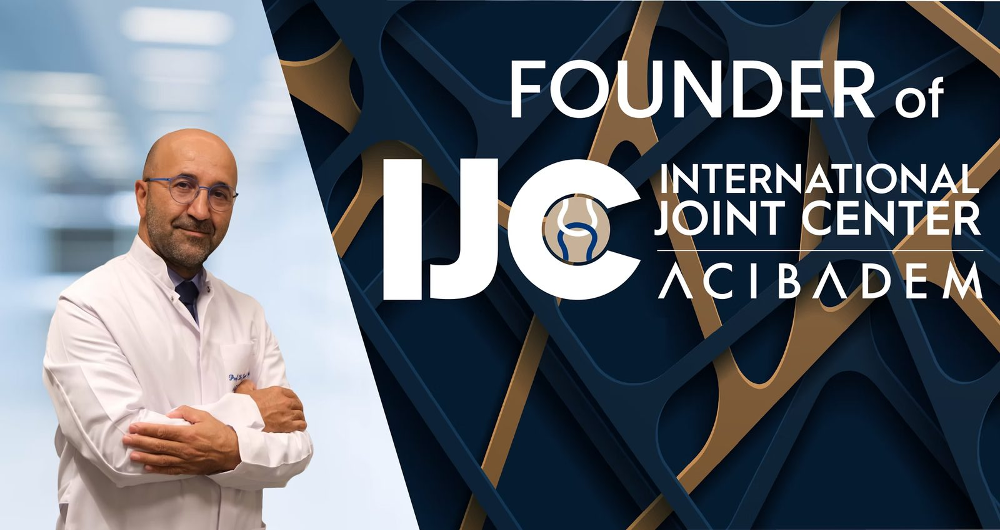
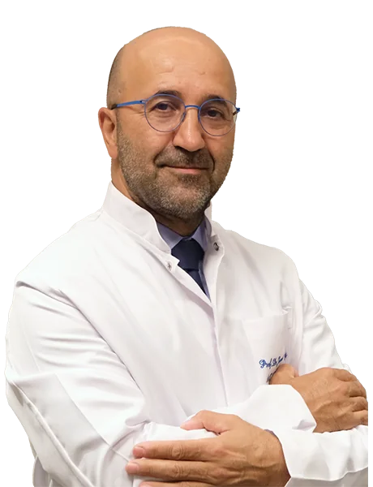
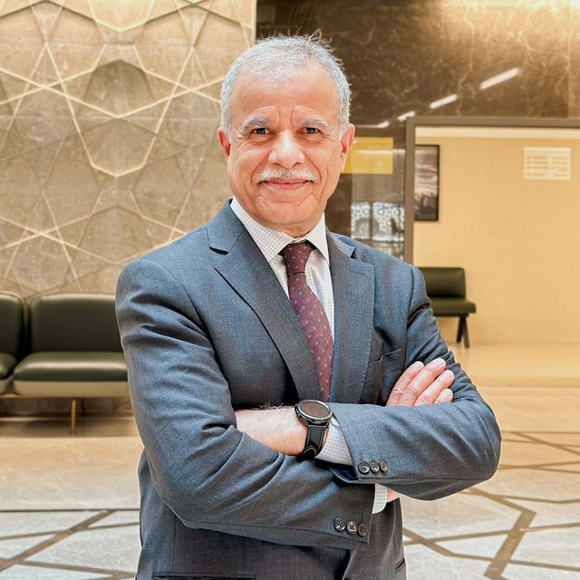

MODERN ARTHROPLASTY Issues We Face in the Middle East
A distinguished scientific meeting focusing on the challenges and considerations surrounding modern arthroplasty in Middle Eastern patients.

Expert Leadership
Prof. Dr. Javad Parvizi
Conference Leadership
Guided by leading experts in Orthopedic Surgery and Arthroplasty.


Prof. Dr. Sultan Al Maskari
Orthopedic Surgery & Arthroplasty
Scientific Program
Comprehensive sessions tailored to the challenges of the region.
Download Program (PDF)Friday, December 11, 2026
Opening Dinner
Welcome reception and networking.
Saturday, December 12, 2026
Introduction and objectives
S. Al Maskari / J. Parvizi
Modern Arthroplasty: What are the essential elements?
Diabetic patient who lives on rice and baklava
Sickle cell patient - way too many of these
M. Al Sayyad
Old lady with urine incontinence (UTI)
BMI is just a number
Smiley face: Many missing teeth
Questions and Answers
Break
Case Discussions: Middle Eastern Patients
Moderator: S. Al Maskari
Lunch
Operating room temperature and humidity
Skin prep: Anything unique for our patients
Blood conservation: Effective strategies
M. Enayatollahi
Removing contamination: What irrigation solution do we use?
Wound closure and dressing: Anything Unique here?
Questions and Answers
Break
Day 3 and Draining wound
What should we do for VTE prevention
Humaid Al Farii
Dislocation: Cannot get up from a praying position
Case Discussions: Middle Eastern Patients in Istanbul
Moderator: J. Parvizi
Closing Remarks
Gala Dinner
A special evening to conclude the scientific sessions.
Registration Request
Join us in Oman for an engaging scientific meeting and an opportunity to exchange experiences.
Registration Received!
Thank you for your interest. We will review your request and contact you shortly with further details.